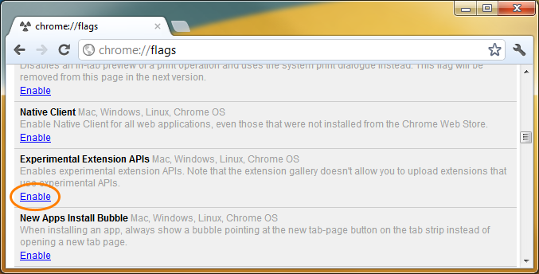
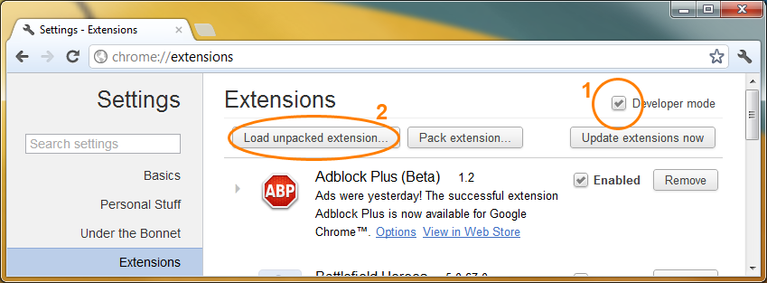
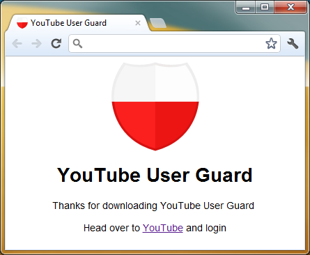
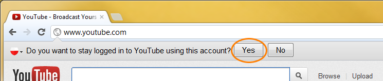

YouTube User Guard
YouTube User Guard is an extension for Google Chrome which allows you to stay signed in to YouTube when you sign out of other Google properties such as Gmail. This extension requires chrome.experimental.infobars, so you must enable Chrome's exeperimental extension APIs
Installation
First, download YouTube User Guard hereExtract the downloaded zip file to a folder anywhere on your computer. I recommend a subfolder inside your Documents folder so you don't lose it.
Now open Google Chrome and type chrome://flags in the address bar.

Enable Experimental Extension APIs. You must restart Chrome for changes to take effect.
Now go chrome://extensions, tick the Developer mode checkbox and then click Load Unpacked Extension and select the folder where you extracted the zip file.

YouTube User Guard is now installed

After installation, visit YouTube. If you are not currently signed in to a Google Account, do so now. Once signed in you will be asked if you wish to stay signed in.

Clicking Yes will result in you staying signed in indefinitely, or until you sign out.
I hope you enjoy YouTube User Guard
Source code available on Bitbucket